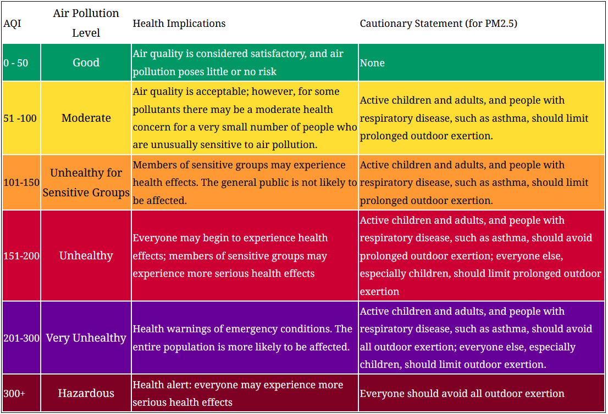
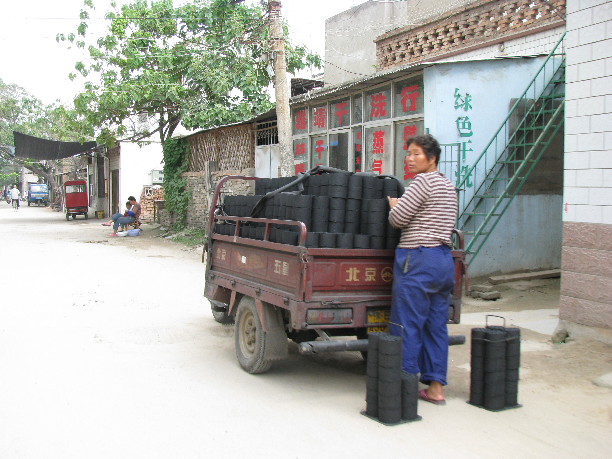
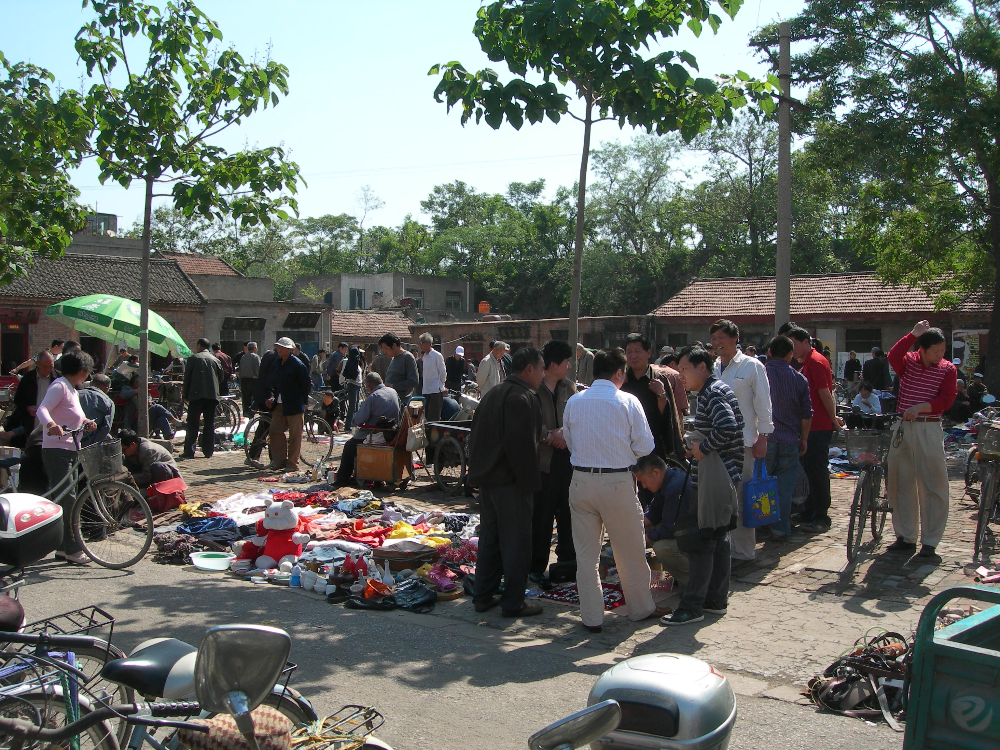

A view of the Buddhist Longmen Grottoes in Luoyang
Monthly pm2.5 averages as seen for 10 years
Since the period of Reform and Opening starting in the late 1970s and continuing to this day, China has experienced massive development in terms of economic and industrial output. This effort has raised hundreds of millions of people out of abject poverty and brought new wealth to millions more as well as rejuvenating a nation which had suffered greatly for almost two centuries prior. All this rapid development has of course come at a cost, like most industrializing nations in the past, much of this has come at it root through the burning of coal. Coal is widely and readily available in China and it has fueled everything from factories, electricity production, and even home heating through coal burning stoves.
While there is a range of airborne pollutants produced by our modern economies, this map project focuses on two sizes of airborne particulates. Large sized particulates are those with a diameter between 2.5 and 10 microns and are often more visible in the air causing a haze or smog. Small sized particles are those smaller than 2.5 microns and are generally too small to see. Though both are unhealthy to breath, the small particles are often more concerning as their small size allows them to be absorbed through the lungs and enter the bloodstream.
National and International bodies set standards to regulate and classify the amounts of these particulates allowed in the air. The measurement of these particles is presented as an Air Quality Index (AQI) and given a number representing the amount of that particle found within the sample size.
Chart showing health effects for exposure to various levels of pm2.5 concentration
I lived in the Kaifeng, China from 2007 - 2010. While I lived there it was hard not to notice the air pollution and in general the poor air in China due to industrial development is notorious. When I lived in China it was before AQI was regularly measured by anyone in China including the government. The policy set down by the central government was that each city and province should work to increase GDP and thus raise up the country through economic development and investment. This meant that anything which might hinder or slow that increase was ignored or minimized. The official government line was that there was no air pollution in China and recall my Chinese teachers at the time (who dutifully towed the official line) emphatically saying that there was no such thing as air pollution and claiming not to even see the smog outside the window. Of course, this positioning was false and my teachers were not stupid, but they did feel it was important to contradict a foreigner when the honor of their nation was on line no matter how ridiculous the foreigner might find the responses. In private conversations, most educated Chinese people would acknowledge that air pollution was real and undesirable but most would concede that development should proceed unbounded first and then when China was rich it could tend to cleaning up its air. And, many would add, is that not what the US and Europe did too?
This hard stance by the central government has of course changed since I first lived in China. As average people in cities have gotten wealthier and also as more Chinese people have traveled abroad there was a growing desire to clean up the air in China. At first only the US Embassy in Beijing was publicregularly measuring and reporting the AQI from its rooftop. The index they used had a range of 0-500 pm2.5. In the winter of 2012 Beijing (and much of Northern China) experienced truly horrific air pollution, with the US embassy's AQI meter reading "Beyond Index" at above 1200 pm2.5. This and similar shocking events combined with the increased living standards for many urban Chinese began to push for policies limiting air pollution.
Now AQI is regularly measured and freely reported across China. Also probably the average Chinese person is much more informed and concerned about the quality of their air than the average person in the US. Of course China still regularly has much worse air pollution than other developed countries, it is much improved from where it was only 10 years ago. I was quite aware of the air pollution when I lived in China; a rare good air day with blue sky was to be savored while a bad air day could literally leave a bad taste in your mouth. However I had no way of measuring or knowing what the actual quality was when I first lived there. I have since been back after AQI was widely measured and reported and I have tried to speculate on just what the levels were like back when I lived there. This curiosity and my experience is what drove me to approach this topic.
Delivering charcoal for cooking and home heating
This project is really just a part of a more major project done to test methods and scaleability. My interests in this larger project mainly stem from a theoretical geographic curiousity. I am first interested in regionality and how regions can or may relate to each other as well as find their place within the whole. I hesitate to draw any larger conclusions about the causes and nature of air polution at this point. Polution is both a subjective as well as objective entity. It can chemically be described, as well understood to come from a wide range and a great acuumulation of causes. Though this inquiry into the causes, harms, and solutions is important; this study drawn more deeply towards other themes such as the relationship between development and various air polution, both in terms of economic development causing air polution the macro scale both in terms of time and space.
Which leads us to the other theme important to this greater study which is that of not just cyclicality, but cyclicarity - the nature and understanding of cyclical patterns. Having gathered and managed the vast data, and learned how to display it in dynamic and compelling ways; I look forward to developing a sort of online or interactive atlas of this data.
A lovely sunny day at a ghost market in Kaifeng, note the shaddows which are often hidden due to haze